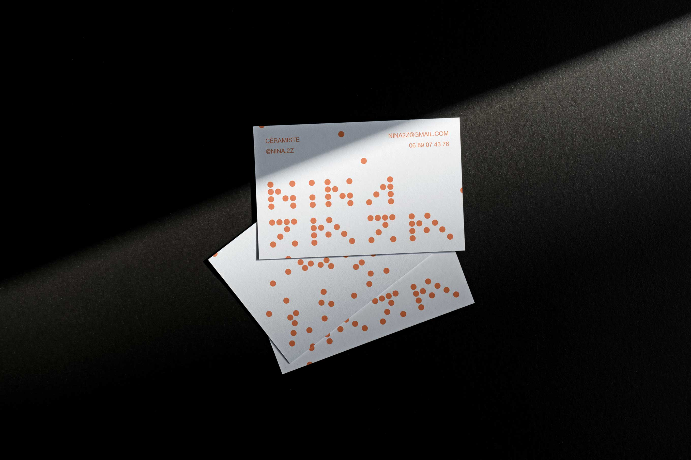
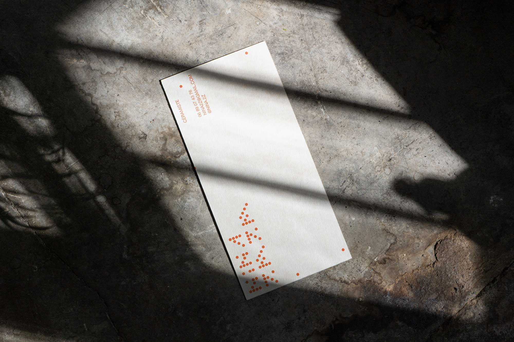
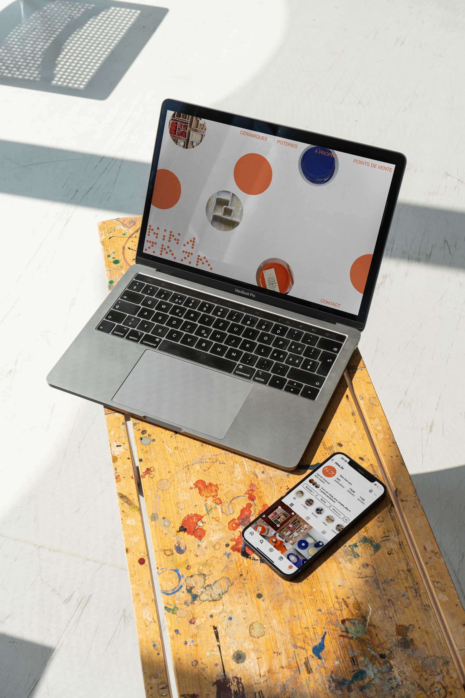
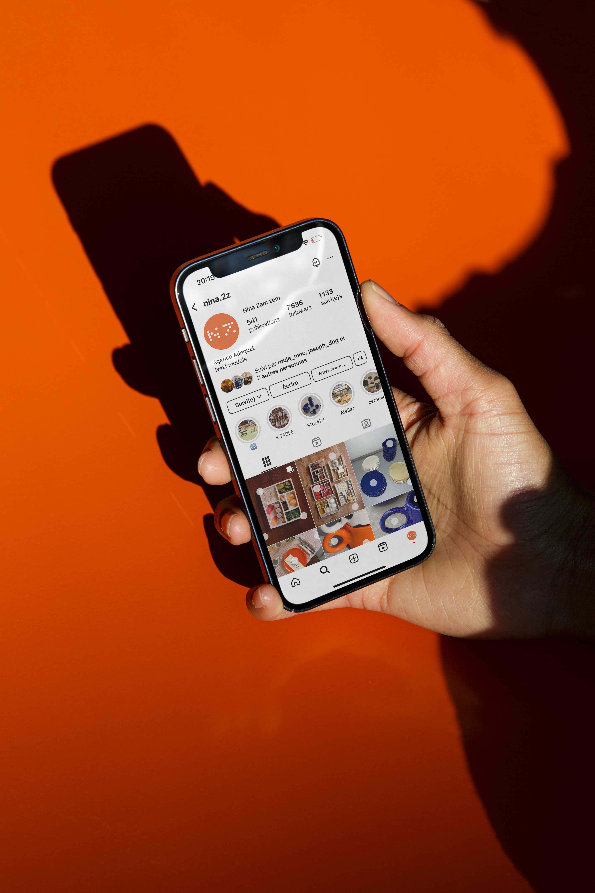
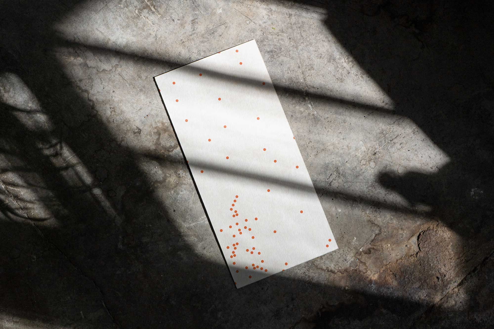
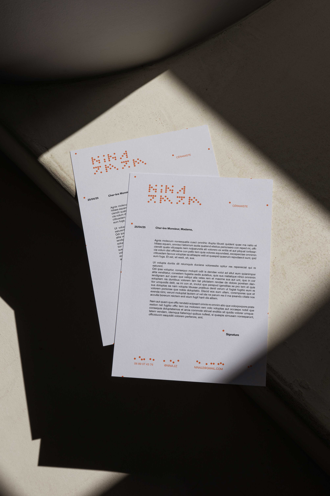

NINA ZMZM
NINA ZMZM
Conception d’une identité et de sa charte graphique
sur supports papiers et numériques pour Nina Zamzem, une artisane céramiste parisienne.
L’identité visuelle proposée incarne le geste même
de l’artisan. Tout comme la céramique réalisée est frappée d’un poinçon identifiable parmi tous, cette identité, comme frappée par l’artiste dans le matériau brut, distingue son art
parmi les autres.






Carte de visite 85x55 mm
En-tête 210x297 mm
Lettre 210x100 mm
Projet ECV